Perfil A
Boutique y romance
Casas pequeñas y con diseño. Un jardín, un salón festivo, un patio tranquilo. Ideal para parejas y para una boda íntima.
El punto de encuentro
Mesas largas, luz cálida y personas que ayer aún no conocías.
Casas y lugares
Pequeños retiros, hoteles y propuestas comunitarias de nuestra investigación. Filtra por país, tipo y precio y abre cada oferta para ver los detalles.
10 de 10 ofertas
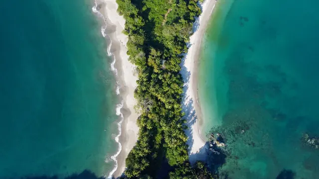
Imagen de ejemplo · PexelsSobre Montezuma, sur de la península de Nicoya
Centro de retiro en la selva con vista al mar. Comida orgánica, piscina de agua salada, spa y yoga diario.
Ver detalles ›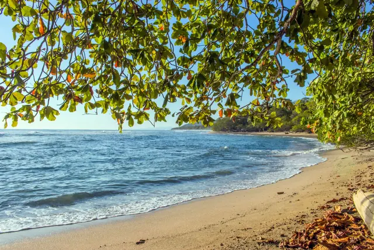
Imagen de ejemplo · PexelsPlaya Tamales, Puerto Jiménez, península de Osa
Frente a la playa en la península de Osa. 13 habitaciones para hasta 36 huéspedes, cocina con productos de su finca.
Ver detalles ›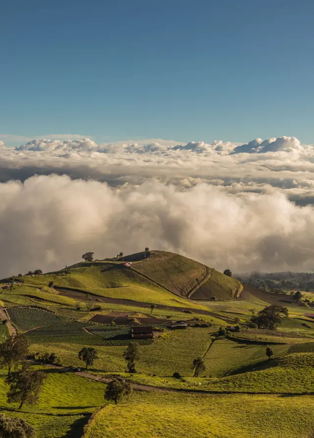
Imagen de ejemplo · PexelsPavas, Carrizal, Alajuela
En lo alto del Valle Central, a unos 25 minutos del aeropuerto de San José. Tres comidas al día en la tarifa por noche.
Ver detalles ›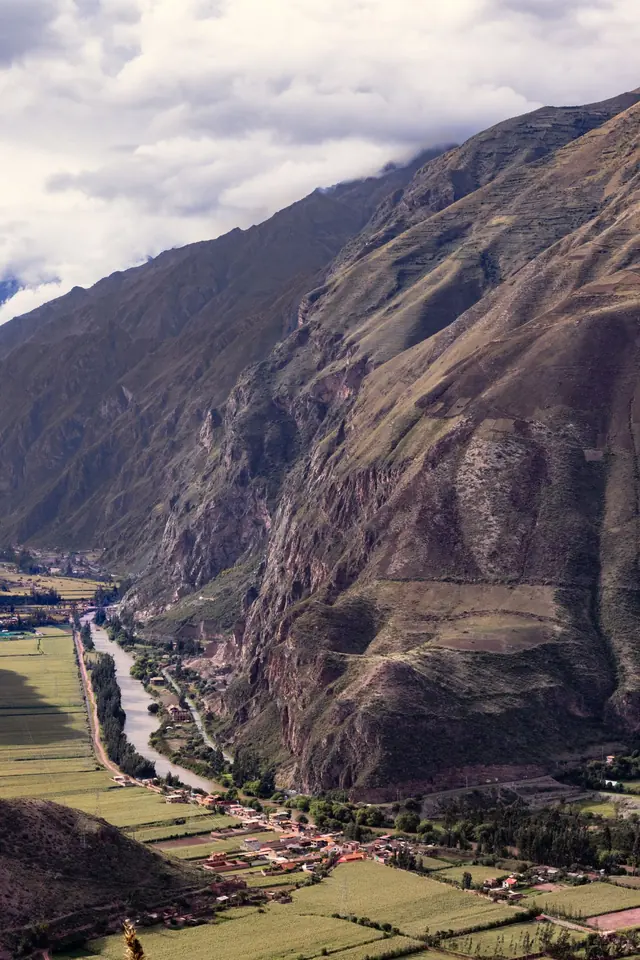
Imagen de ejemplo · PexelsValle Sagrado, cerca de Urubamba
Casa gestionada desde 1994 entre Cusco y Machu Picchu. 35 habitaciones, cocina vegetariana de sus propios huertos.
Ver detalles ›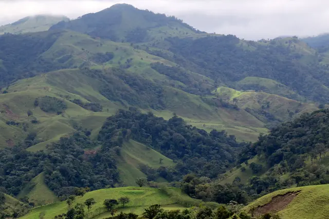
Imagen de ejemplo · PexelsBarrio Jesús, Atenas, Alajuela
Hotel de bienestar con 25 habitaciones y vista al Pacífico. Tres comidas y yoga dos veces al día incluidos.
Ver detalles ›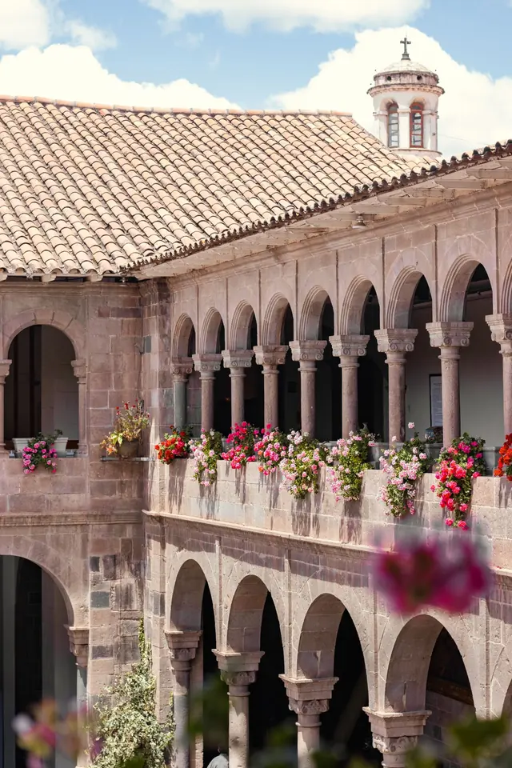
Imagen de ejemplo · PexelsCusco, Calle Meloc 148 y Calle Fierro 476
Dos casas en Cusco con restaurante y tienda. Según la casa, cada estancia apoya a una fundación.
Ver detalles ›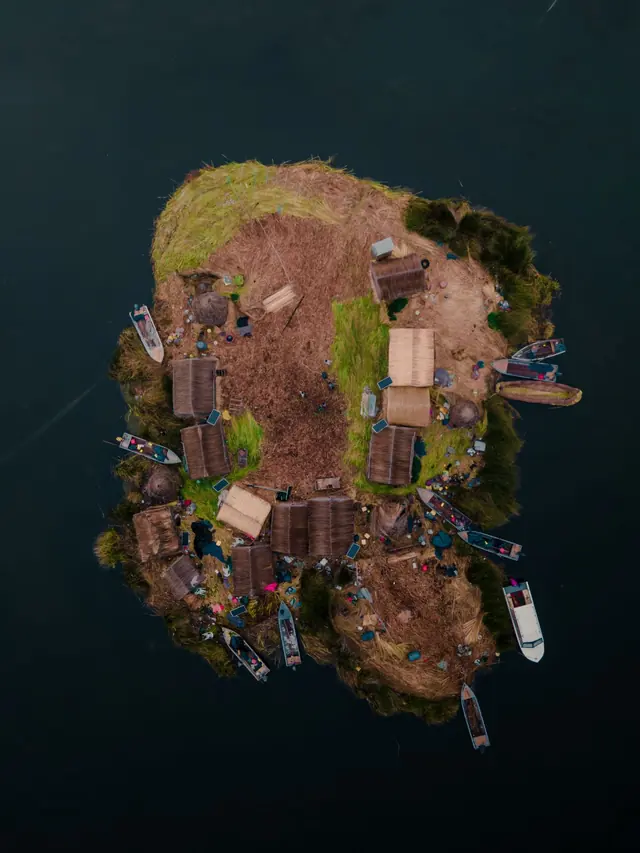
Imagen de ejemplo · PexelsIsla Amantaní, lago Titicaca, región Puno
Turismo comunitario en una de las islas más grandes del lago Titicaca. Se recomiendan dos días y una noche.
Ver detalles ›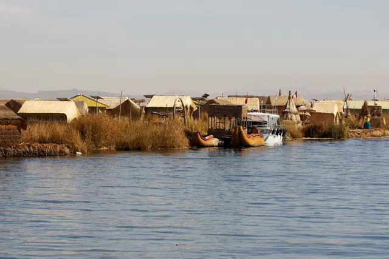
Imagen de ejemplo · PexelsLuquina Chico, Chucuito, Puno
Turismo comunitario en el lago Titicaca, a 22 kilómetros de Puno. Habitaciones con baño privado y tres comidas.
Ver detalles ›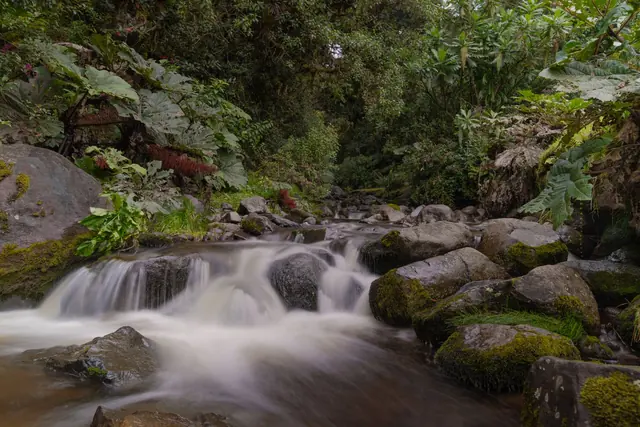
Imagen de ejemplo · PexelsEn el interior de la península de Osa
Turismo rural comunitario de la comunidad local (ADIRQ). Cabinas rústicas y posadas familiares.
Ver detalles ›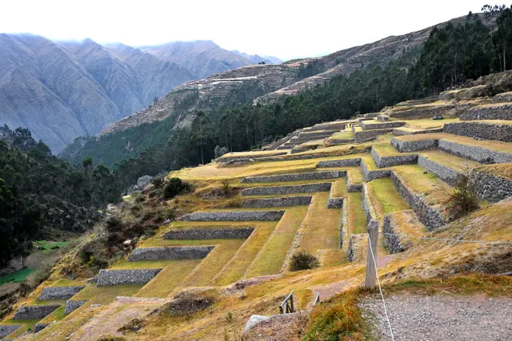
Imagen de ejemplo · PexelsPisac, región Cusco
Propuesta comunitaria en torno al cultivo tradicional y las papas nativas. Se recomienda un día completo.
Ver detalles ›Ninguna oferta coincide con este filtro.
Una selección, no una alianza. Las casas no son socias de Gatherwynd. Aquí no se puede reservar nada. Todos los datos provienen de las webs oficiales de las casas (a fecha de 15.11.2026).
Las fotos son imágenes de ejemplo de la región de Pexels, no fotos de las casas.
Para casas
Gatherwynd no es un portal de reservas. Nils va a tu casa, graba en el lugar, habla con tus huéspedes y muestra el lugar y a las personas que hay detrás. Sin brillo y sin grandes palabras.
Hoteles boutique, pequeñas casas de huéspedes y homestays. Casas cuidadas y con estilo que es fácil pasar por alto. Solo unas pocas casas por región, para que cada una tenga su propio lugar.
Todo incluido y hoteles de cadena. Ellos ya se promocionan solos. Gatherwynd se queda con las casas pequeñas.
Casas pequeñas y con diseño. Un jardín, un salón festivo, un patio tranquilo. Ideal para parejas y para una boda íntima.
 Foto · D. Trindade
Foto · D. Trindade
Apartamentos o bungalows, espacio para cocinar y jugar, un terreno fácil de abarcar. Casas donde una familia puede llegar y sentirse en casa.

Apartada, tranquila, con vistas y privacidad. Una casa para dos que quieren unos días de verdad para ellos.
Imágenes de ejemplo, editadas con IA. La foto del centro es una foto de archivo de Denner Trindade, Pexels.
América Latina, España, Portugal, Quebec y otros lugares de Europa. A partir de diciembre Nils está de viaje, también en Perú.
Cuéntanos sobre tu casaPara huéspedes
Retiros con un programa claro o una pausa que organizamos contigo con calma. Tú decides. Y si quieres, pasas ese tiempo con Nils en una casa que tú elijas.
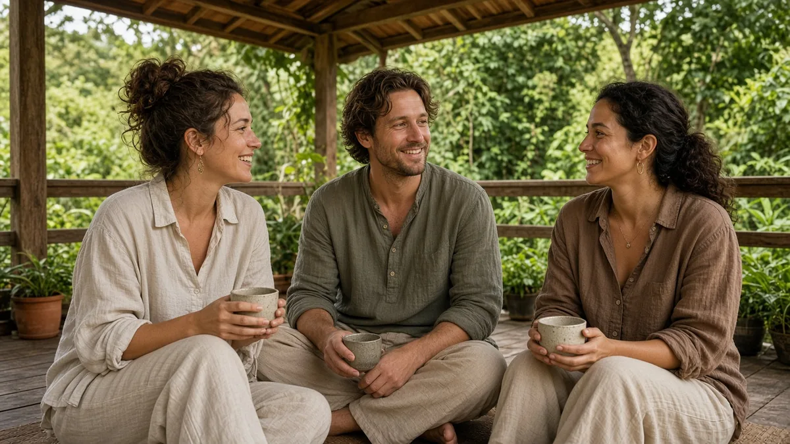
Programas fijos, fechas fijas y precios claros. Elige lo que va contigo y reserva sin vueltas.
O escríbenos primero qué estás buscando.
Consultar un retiro Foto · alleksana / Pexels
Foto · alleksana / Pexels
Tus fechas, tu ritmo, el acompañamiento que quieras. Lo armamos contigo, de forma personal y discreta.
Una consulta personal, no un programa fijo.
Planear tu pausaImágenes de ejemplo, editadas con IA. La foto de la derecha es una foto de archivo de alleksana, Pexels.
O tiempo con Nils en una casa que tú elijas.
Dinos adónde quieres ir. Vemos juntos si encaja.
Pequeños centros de retiro y casas que ofrecen yoga, ayuno, pausa y calma. Descritos con sencillez. Sin brillo y sin grandes palabras.
Mira lugares y programas con calma. Nils quiere ir él mismo y mostrarte cómo es allí.
Escríbenos en pocas líneas si tienes una casa o si buscas una pausa. Vemos juntos si encaja. Si no, también está bien.
Te respondemos con todos los detalles sobre reserva y pago. De forma personal y sin prisa.

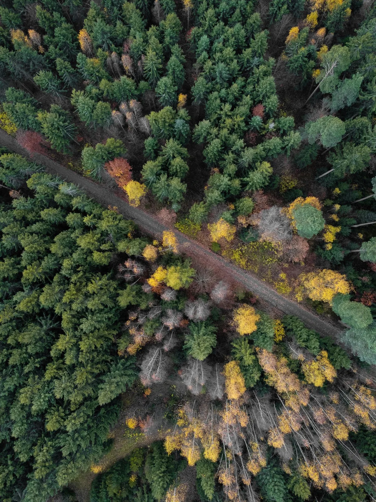
Foto · J. Wolfert / Pexels
Imágenes de ejemplo, editadas con IA.

Centros pequeños, terrazas abiertas y habitaciones con vista al verde. Sin ruido, sin espectáculo. Personas que se toman su tiempo.
Hoteles, centros de retiro y ecolodges que se sienten como estar en casa de amigos. Nils te muestra cómo son de verdad.
Imágenes de ejemplo, editadas con IA.
Ecolodges, jardines de hotel, habitaciones con vista y casas en medio del verde. Imágenes simbólicas hasta que Nils grabe en el lugar.
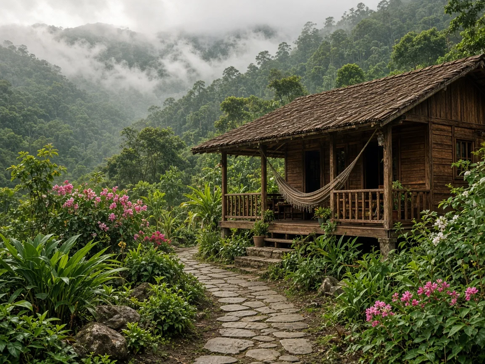
Casitas, un sendero de jardín, vista a las montañas.
 Foto · Dmitry A.
Foto · Dmitry A.
Madera, calma y un techo bajo los árboles.
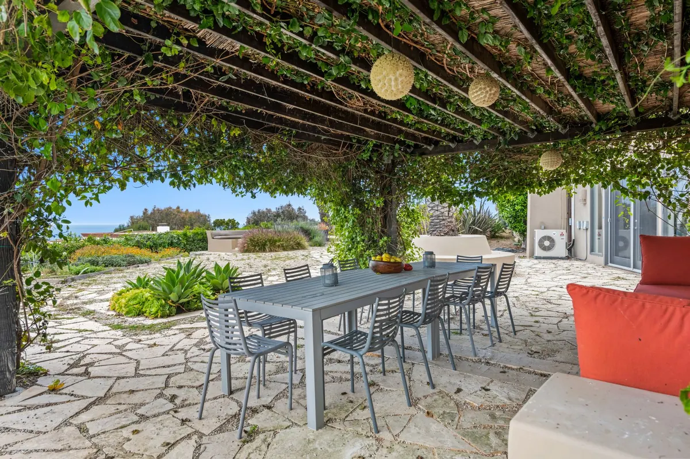
Foto · hi room / PexelsUna mesa larga a la sombra y farolillos para la noche.
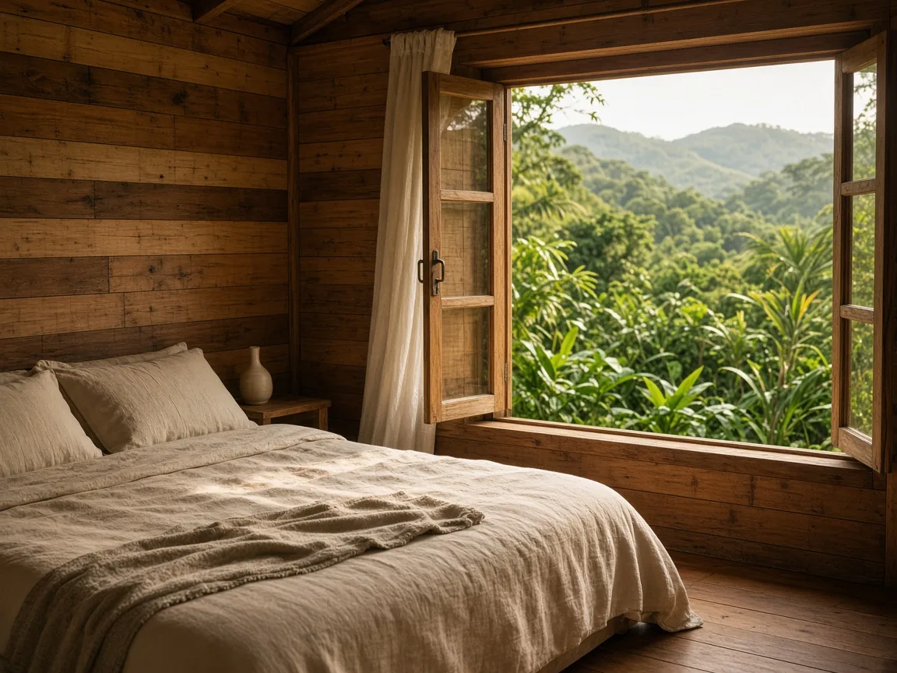
Cama de lino, madera y verde frente a la ventana.
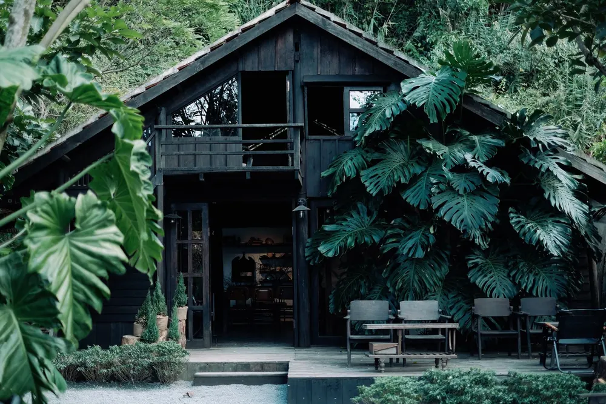
Foto · Pew Nguyen / PexelsMadera, una pequeña terraza y hojas hasta el techo.
 Foto · M. Bertelli
Foto · M. Bertelli
Un refugio de madera y verde hasta el horizonte.
Imágenes de ejemplo, editadas con IA. Las fotos con nombre son fotos de archivo de Pexels, no los lugares reales de Gatherwynd.
Tu anfitrión
Gatherwynd
Gather significa reunir, juntarse. Wynd es una antigua palabra escocesa para un camino estrecho.
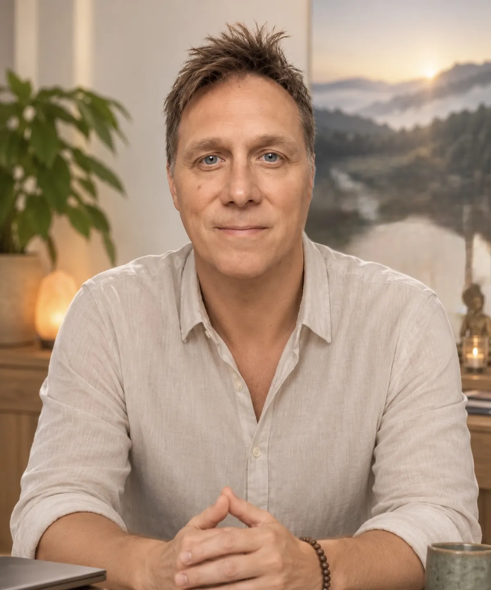
Nils · Anfitrión«¿Qué necesita un lugar para que las personas encuentren allí de verdad la calma?»
Soy Nils. Vivo cerca de Barcelona.
Durante mucho tiempo fui profesor de yoga y shiatsu, coach y guía de retiros. Lo que queda es sencillo: respirar, moverse, quedarse en silencio.
Presento pequeños lugares para hacer una pausa y a las personas que hay detrás. Viajo allí, grabo en el lugar y muestro lo que veo.
Sin brillo. Sin grandes palabras. Solo lo que hay.
Nils-Patrick vive en Sitges, cerca de Barcelona. Habla alemán, inglés y español. Con Gatherwynd quiere presentar centros de retiro, alojamientos en la naturaleza y pequeños hoteles: en América Latina, en España, en Portugal y en otros lugares de Europa. Se trata de yoga, meditación, movimiento y calma. Nada más de lo necesario.
Mucho está naciendo ahora mismo. Prefiere decirlo desde el principio. A partir de diciembre está de viaje, también en Perú.
Y si ahora no quieres hacer nada: también está bien. Vuelve cuando quieras.
Con calma
Qué es Gatherwynd, de dónde viene el nombre y qué llevó a Nils hasta aquí. Los subtítulos están en alemán. Video real, el propio Nils.
Voz del entrevistador generada con IA
Gatherwynd quiere ser el camino que une: centros de retiro, alojamientos en la naturaleza y pequeños hoteles mostrados con honestidad, con dos caminos para huéspedes y un interlocutor claro para las casas.
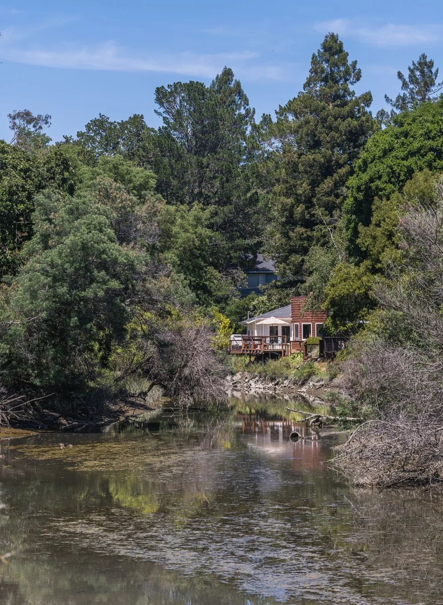
Foto · R. So / PexelsEscríbele directamente a Nils. Para huéspedes, para hoteles y lugares de retiro y para creadores. Cuéntanos brevemente quién eres y qué buscas.
Si nos escribes, usamos tus datos solo para responderte. Más información en la política de privacidad.